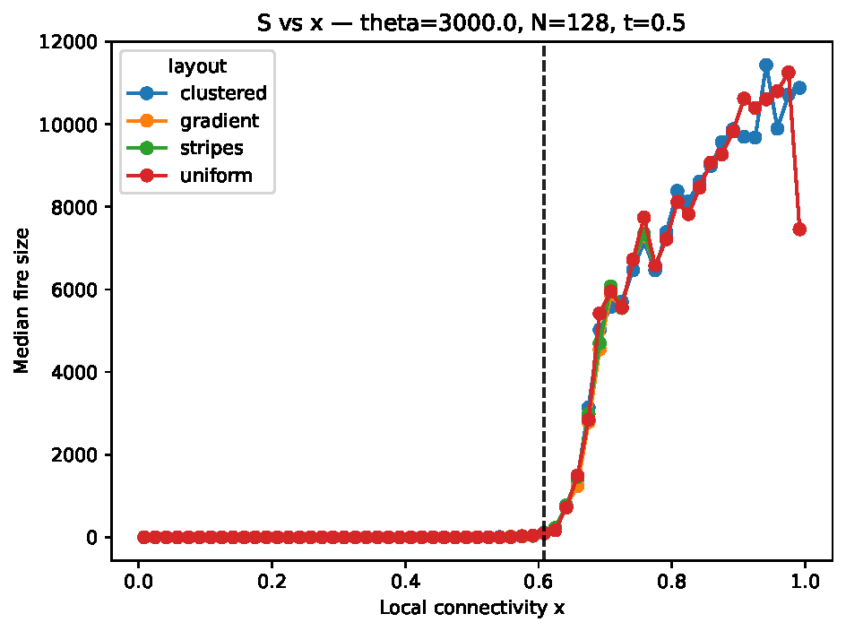
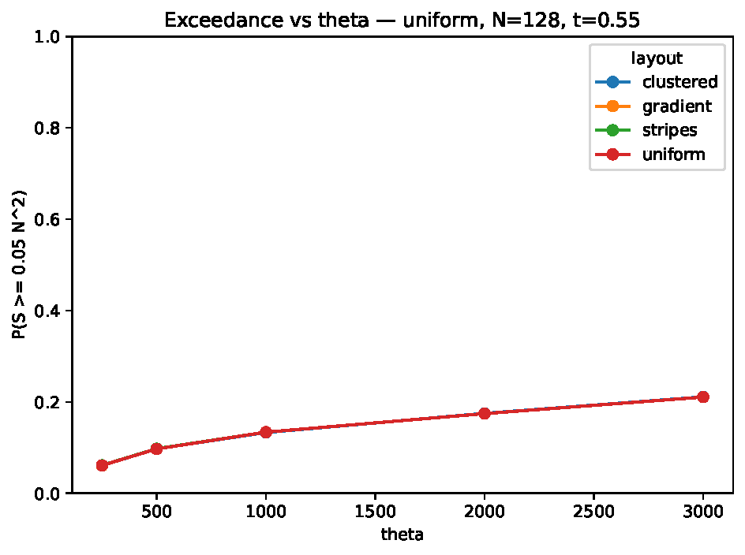

Most ignitions do almost nothing. A spark lands, a few trees burn, and the event is over before it has really become an event at all. What interested me here was the transition in the other direction: when does a random ignition stop being local bad luck and start accessing enough connected fuel to become a genuinely large burn?
A student I was working with had built a version of the Drossel–Schwabl forest-fire model, which is one of those deceptively simple models that becomes more interesting the longer you stare at it. The lattice is just a square grid. Each site is empty, tree-filled, burning, or burnt. Between lightning strikes, trees regrow at random; when lightning lands on a tree, the entire connected cluster containing that site is removed in one go. It is a stylised model in the strongest possible sense. There is no wind, no slope, no moisture, no suppression, and no fire front moving cell by cell. But that simplification is the point. It strips the problem down to connectivity.

This is the model in one glance. The crucial point is that θ does not control fire size directly; it controls how much connected fuel has time to accumulate before the next random lightning strike.
The model is event-based rather than continuous. Before each lightning event, the simulation performs θ random regrowth attempts. Then one random site is chosen for ignition. If that site is not a tree, nothing happens. If it is a tree, the whole 4-neighbour connected cluster burns instantly. That makes θ the control knob for how connected the lattice is likely to be when lightning arrives.
There is an obvious first quantity to measure here, which is the global tree density. But it is also the wrong one if the real question is about ignition. Lightning does not care about the average state of the forest. It cares about the patch it happens to hit. So instead of asking only how full the lattice is overall, I wanted to know what the neighbourhood around the ignition site looks like at the instant of impact.
The paper's key local quantity is the tree density inside a \(9\times 9\) window centred on the lightning strike. Call that local density \(\rho_{\mathrm{loc}}\). If 49 of the 81 cells in that window are trees, then \(\rho_{\mathrm{loc}} \approx 0.61\). That number turned out to matter much more than I expected.
What the simulation shows is not a gradual, featureless increase in fire size as the local neighbourhood gets denser. Instead, the median fire size as a function of \(\rho_{\mathrm{loc}}\) develops a very sharp uptick. Across the parameter sweeps in the paper, that knee sits remarkably close to the same place: \(\rho_{\mathrm{loc}}^\star \approx 0.61\). Below that, typical burns stay small. Above it, the ignition site is much more likely to sit inside a connected fuel network that can support a much larger event.

The eye goes first to the height of the curve, but the more interesting feature is where it turns. Even when θ is large and post-threshold fires become much more severe, the knee still appears at essentially the same local density.
I like this result because it is both modest and concrete. It is not claiming to have found the wildfire threshold in nature; that would be nonsense. It is saying something narrower and cleaner. In this model, there is a reproducible local connectivity threshold at ignition, and it corresponds to a simple count you can picture: roughly 49 trees in an 81-cell neighbourhood. That is the point where the local geometry begins to look less like a collection of fragments and more like connected fuel.
There is a percolation flavour to this, though not in the strict textbook sense of estimating a universal lattice threshold. The useful idea from percolation theory is that connectivity changes qualitatively once occupancy gets high enough. What this model adds is an ignition-centred version of that idea. The relevant question is not just whether the lattice contains large clusters somewhere, but whether a randomly chosen ignition site lands inside one.
The next thing I wanted to know was whether increasing θ moves that threshold around. It does not, at least not much. What changes instead is the severity of what happens once the threshold is crossed. At larger θ, the lattice has had more opportunities to regrow before lightning strikes, so lightning is more likely to hit a tree at all, and once it does, the accessible clusters are larger.
For a representative sweep at N=128, the probability that a lightning event produces any fire rises from about 0.405 at θ=250 to about 0.482 at θ=3000. More dramatically, the unconditional probability of a genuinely large event—defined here as burning at least ten percent of the lattice, so \(S \ge 0.10N^2\)—rises from about 0.028 to about 0.196. That is a big jump, and it matters that it is expressed per lightning event rather than conditional on a fire already having started. Operationally, that is the quantity that tells you how often a random strike produces a serious event in the model.

The threshold itself barely shifts, but the risk above it changes sharply. As θ increases, large fires stop being rare per lightning event; the different initial layouts lying close together is also a quiet hint that the dynamics are forgetting how the forest started.
That last point is worth pausing on. The simulations were initialised with several different spatial layouts: uniform random, clustered, striped, and gradient. One might expect those to leave strong signatures in the later dynamics. But under uniform random regrowth, they mostly do not. The steady-state risk metrics differ only weakly across layouts. This makes sense once you think about what the model is doing. If every regrowth attempt is spatially uniform, then the model is continually washing structure away. Initial condition matters early. In the long run, the regrowth–ignition balance matters more.
That is not a failure of the model. It is a clean statement about what kind of question the model can answer. If the aim is to study persistent landscape heterogeneity, then the regrowth rule has to remember the landscape somehow: a fertility mask, a spatially varying growth probability, something that stops the system from homogenising itself. Otherwise one should not pretend to be studying long-lived structure. The model is telling you, quite plainly, that it forgets.
There is a second place where the paper had the good sense not to cheat. Finite-size comparisons can go badly wrong if one carries the same parameter from one system size to another and acts as if nothing has changed. Here the regrowth mechanism performs θ random site attempts per lightning event. On an N×N lattice, that means the effective per-cell regrowth opportunity scales like
φ = θ/N².
So holding θ fixed while increasing N is not a fair comparison at all. Larger systems are effectively being regrown more slowly on a per-cell basis. Once you notice that, the right scaling variable is obvious. The comparison should be organised around φ, not raw θ. I find this kind of bookkeeping point oddly satisfying, because it is exactly the sort of thing that quietly ruins an analysis if nobody says it out loud.
What remains, then, is a model with a very specific kind of explanatory power. It does not simulate wildfire spread in a realistic sense. It does not forecast anything. What it does do is isolate a mechanism: local connectivity at the point of ignition. In this stripped-down setting, that mechanism is strong enough to generate a stable threshold and a sharp change in event statistics. Once the local neighbourhood gets dense enough, a spark is no longer interacting with a sparse patchwork. It is interacting with a network.
That, to me, is the most interesting outcome here. The global density matters, of course, because it influences what local environments are available. But the real action is local. A fire becomes large not because the forest is vaguely full on average, but because the ignition happens to land in the wrong place at the wrong time: a place where connectivity has already crossed a threshold.
The natural extension is to make the model remember geography instead of erasing it. If regrowth were persistently heterogeneous rather than spatially uniform, the question would become sharper. Does the same local threshold survive when the landscape has durable structure? I do not think this paper answers that. It does something more useful first: it shows that even before adding realism, there is already a clean local mechanism worth understanding.